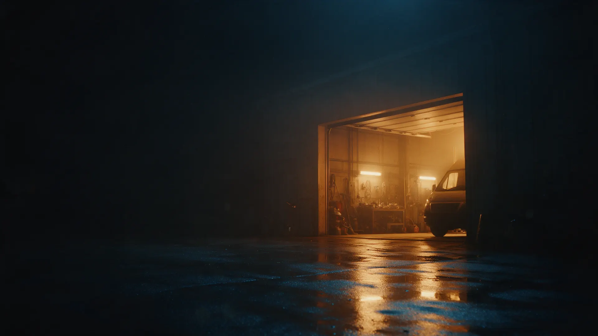
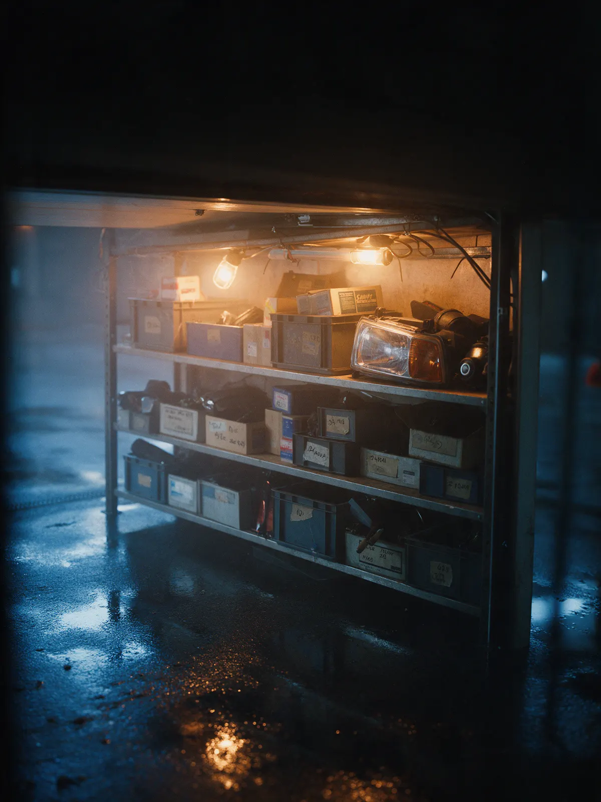
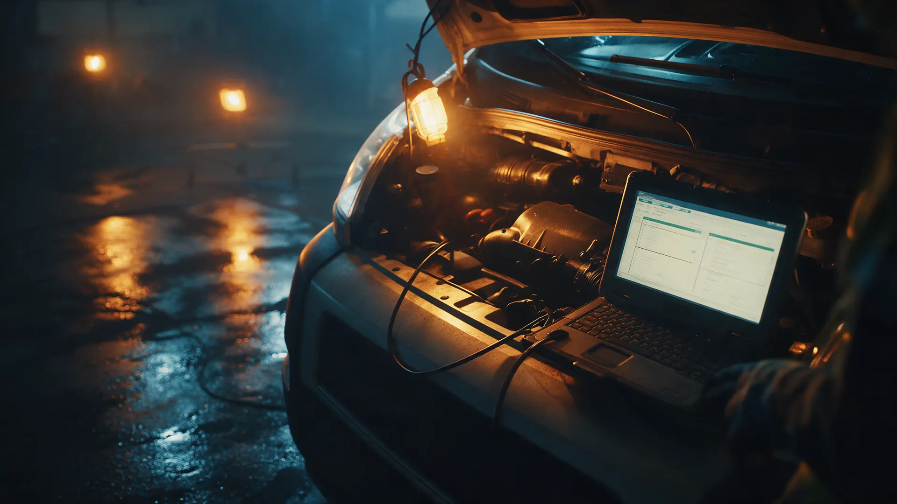
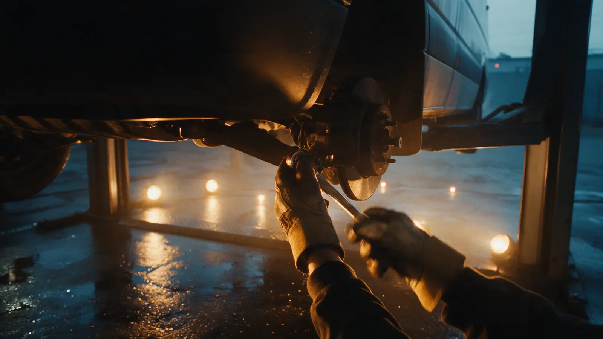

Автосервис для грузовых и фургонов · Рязань
АвтофургонЦентр в Рязани – диагностика грузовых и фургонов за 15 минут
Официальный сервис SITRAK, DONGFENG, FOTON. Не навязываем ремонт, если он пока не нужен.
- Диагностика ошибки за 15 минут
- Не навязываем ненужный ремонт
- Официальный сервис грузовых брендов

Что входит в визит
Входит
- Компьютерная диагностика
- Объяснение причины и этапов ремонта
- Фиксированная цена после диагностики
Отдельно, если нужно
- Запчасти под заказ – отдельной строкой
- Кузовной ремонт – отдельная услуга
Цены
Итоговая стоимость зависит от марки и объёма работ, называем после диагностики.
Диагностика и ТО
- Техническое обслуживаниеот 1 500 ₽
- Ремонт ДВСот 5 000 ₽
Остальное
- Ремонт и заправка кондиционеровот 1 550 ₽
- Компьютерная диагностикауточнить
Цену ремонта называем только после диагностики — без скрытых доплат и навязанных работ.
Как проходит
- 01
Записались по телефону или в WhatsApp
Подскажем, когда приехать.
- 02
Диагностика за 15 минут
Находим причину, прежде чем что-то менять.
- 03
Называем цену и объясняем этапы
Без навязанных доп-работ.
- 04
Ремонт в заявленные сроки
Машину отдаём точно в оговоренный день.



Что обещаем
Не навязываем лишний ремонт
Если менять пока не нужно — так и скажем.
Диагностика за 15 минут
Не держим машину в очереди без дела.
Официальный сервис грузовых брендов
SITRAK, DONGFENG, FOTON.
Отзывы с Яндекс.Карт
«Привёз машину с ошибкой по электроннике. Мин за 15 определили причину, за пару часов исправили. Цена оказалась ниже, чем в других автосервисах.»
Александр Рогожкин · 23 декабря 2025
«Привёз грузовик на ТО — ожидали больших затрат. Но мастера сказали, что пока ничего менять не нужно и что стоит проверить через 10 тыс.км. Такой подход вызывает доверие.»
Илья К. · 19 декабря 2025
«Профессионализм мастеров впечатлил с первого взгляда. Диагностика была проведена быстро и точно. Специалисты подробно объяснили все этапы работы и озвучили точную стоимость ремонта.»
Людмила · 28 ноября 2025
Отзывы с карточки на Яндекс.Картах, без правок.
Частые вопросы
С какими марками работаете?
Официальный сервис SITRAK, DONGFENG, FOTON, также обслуживаем другие грузовые и фургоны.
Сколько длится диагностика?
Обычно около 15 минут, чтобы определить причину неисправности.
Назовёте цену сразу?
Да, цену и этапы работы объясняем после диагностики, до начала ремонта.
Можно привезти машину без записи?
Лучше предупредить заранее по телефону или в WhatsApp — подберём время.
Запишитесь на диагностику
- Адрес
- район Южный Промышленный узел, 28, Рязани
- Часы
- Пн–Пт 09:00–18:00, Сб–Вс выходной
- Телефон
- +7 (4912) 57-51-96